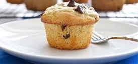

Home
My Favorite Recipe
My Likings
My Construct 2,3 Games
My Scratch Games
Birds and Wildlife Pictures

Chocolate Chip Muffins
Ingredients:
2 eggs
1 cup (220g) Chelsea White Sugar
cup (110g) standard flour
6 Tbsp cocoa powder
2 tsp baking powder
1 tsp vanilla essence
2/3 cup (160 ml) milk
2/3 cup (150 g) butter, melted
120g chocolate chips (optional)
1. Preheat oven to 180 Deggrees C. Grease or line 6 extra large muffin tins or 12-15 medium muffin tins.
Beat the eggs and Chelsea Sugar.
In a separate bowl, combine the flour, cocoa powder, baking powder. Add this dry mix to eggs and sugar.
Add the vanilla essence, milk and melted butter.
Fold in the melted butter. Add chocolate chips (please note that these might end up in the bottom of the muffin).
Bake until a wooden skewer is inserted in the center and comes out clean (approx 30 minutes for XL muffins, approx 20 minutes for medium size muffins).
Makes: 12 - 15 medium muffins